Lattice File¶
General parameter¶
Basic format of the general parameters are,
keyword1 = "value1";
keyword2 = "value2";
...
keyword
|
value
|
description
|
|---|---|---|
sim_type
|
“MomentMatrix”
|
Simulation mode. FRIB simulation uses
the particular mode “MomentMatrix”.
|
MpoleLevel
|
“0”, “1”, or “2”
|
Multipole term controller for the rf cavities.
“0” - only include focusing and defocusing effect
“1” - include dipole terms
“2” - include dipole and quadrupole terms
|
EmitGrowth
|
“0” or “1”
|
Flag for cross-cavity emittance growth effect.
“0” - False (no emittance growth)
“1” - True (calculate emittance growth)
|
HdipoleFitMode
|
“0” or “1”
|
Flag for auto-adjustment of bending element
“0” - use “bg” or “beta” for the bending strength
“1” - auto-adjust the bending strength
|
Beam parameter¶
Basic format of the beam parameters are,
keyword1 = value1;
keyword2 = [value2, value3]; # list input
...
keyword
|
value
|
description
|
|---|---|---|
IonEs
|
float
|
Nucleaon mass of the reference beam. [eV/u]
|
IonEk
|
float
|
Initial kinetic energy of the reference beam. [eV/u]
|
IonChargeStates
|
list of float
|
List of charge to mass ratios of the all charge states. [1]
The first element is used as the reference beam.
|
NCharge
|
list of float
|
List of macro weights of the all charge states. [1]
|
${vector_variable}${n}
|
vector[7]
|
Initial centroid vector of the n-th charge state.
${vector_variable} is defined in
source.![[x, x', y, y', \phi, E_k, 1]](_images/math/09d424e4af2028b34dfce5dc2c14763b0e41785d.png) with with[mm, rad, mm, rad, rad, MeV/u, 1]
|
${matrix_variable}${n}
|
vector[49]
|
Flattened initial envelope matrix of the n-th charge state.
${matrix_variable} is defined in
source.Cartisan product of
![[x, x', y, y', \phi, E_k, 1]^2](_images/math/79ec2fb77a7424ab0f05a766b9a10deeed91841a.png) with with[mm, rad, mm, rad, rad, MeV/u, 1]
 |
Eng_Data_Dir
|
string
|
Directory path of the rf cavity data.
dir(path) supports relative path. |
Lattice elements¶
Basic format of the one lattice element is,
name_of_element1: element_type, parameter1 = value1, parameter2 = value2, ... ;
After writing down the all lattice elements, user need to specify the lattice cell and the cell to USE.
# define the cell
name_of_cell: LINE = ( name_of_element1, name_of_element2, name_of_element3, ... );
# set the cell to USE
USE: name_of_cell;
| element_type | description |
|---|---|
source |
Starting point of the simulation. |
marker |
Marker element. |
stripper |
Chage stripper element. |
tmatrix |
User input transfer matrix. |
orbtrim |
Orbit trim element. |
drift |
Drift space element. |
solenoid |
Solenoid magnet element. |
quadrupole |
Magnetic quadrupole element. |
sextupole |
Magnetic sextupole element. |
equad |
Electrostatic quadrupole element. |
sbend |
Magnetic bend element. |
edipole |
Electrostatic dipole element. |
rfcavity |
RF cavity element. |
Special element¶
-
type
source¶ Starting point of the simulation. Initial beam state parameters are set at this element.
Parameters: vector_variable: string
Name key of the initial centroid vector.matrix_variable: string
Name key of the initial envelope matrix.
-
type
marker¶ Marker element. Nothing to do.
-
type
stripper¶ Stripper element.
Parameters: IonChargeStates: list of float
List of charge to mass ratios after the charge stripper. [1]charge_model: string
Macro weight model for stripper.- “baron” (default): Use Baron formula for the macro weights.- “off”: UseNChargeparameter for the macro weights.NCharge: list of float
List of macro weights after the charge stripper. [1]This list length must be same as theIonChargeStatesThis parameter is used only in the case ofcharge_model = "baron".Stripper_IonZ: float (optional, default is 78.0/238.0)
Charge to mass ratio of the reference beam. [1]Stripper_IonMass: float (optional, default is 238.0)
Ion mass of the reference beam. [amu]Stripper_IonProton: float (optional, default is 92.0)
Proton number of the reference beam. [1]Stripper_E1Para: float (optional, default is 2.8874e-3)
Constant part of the energy struggling parameter of the charge stripper. [MeV/u]Stripper_lambda: float (optional, default is 5.5740)
Momentum spread factor of the charge stripper. [1]
of the charge stripper. [1]Stripper_upara: float (optional, default is 2.6903)
Momentum spread factor of the charge stripper. [1]The momentum spread is defined as 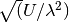 [mrad].
of the charge stripper. [1]The momentum spread is defined as 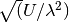 [mrad].Stripper_E0Para: vector[3] (optional, default is [16.348e6, 1.00547, -0.10681])
Energy loss parameters due to the ionization.[Constant_part, Energy_dependence, Thickness_depenedence] with [eV/u, 1, 1]Stripper_Para: vector[3] (optional, default is [3.0, 20.0, 16.623e6])
Stripper foil parameters.[Thickness, Thickness_variation, reference_energy] with [um, %, eV/u]
-
type
tmatrix¶ User input transfer matrix element.
Parameter: matrix: vector[49]
Flattened 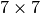 transfer matrix.
Optical element¶
-
type
orbtrim¶ Orbit trim element. This can be use as steering magnet.
Parameters: realpara: int
Realistic input parameter flag for the beam kick angle.0 - usetheta_xandtheta_yfor the beam kick.1 - usetm_xkickandtm_ykickfor the beam kick.theta_x: float
Horizontal beam kick angle. [rad]theta_y: float
Vertical beam kick angle. [rad]tm_xkick: float
Magnetic field strength for the horizontal beam kick. [T*m]tm_ykick: float
Magnetic field strength for the vertical beam kick. [T*m]xyrotate: float
Transverse rotation angle of the beam. [deg]Note
In the case of user puts both “beam kick information” and “transverse rotation angle” to the ONE orbtrim element, the process order is, transverse rotation -> beam kick. In other words, the beam kick is effected AFTER the transverse rotation.
-
type
drift¶ Drift space element.
Parameters: L: float
Length of the lattice element. [m]
-
type
solenoid¶ Solenoid magnet element.
Parameters: L: float
Length of the lattice element. [m]B: float
Solenoid strength (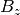). [T]dx: float (default: 0.0)
Misalignment of horizontal shift. [m]dy: float (default: 0.0)
Misalignment of vertical shift. [m]pitch: float (default: 0.0)
Misaglignment of pitch angle. [rad]yaw: float (default: 0.0)
Misaglignment of yaw angle. [rad]roll: float (default: 0.0)
Misaglignment of roll angle. [rad]ncurve: int (default: 0)
Number of curves for slanted and overlapped field.(0 means hard-edge fringe model)scl_fac${n}: float (default: 0)
Scaling factor of the n-th curve (n start from 0).Unit of scl_fac${n}*curve${n} is [T].curve${n}: vector
n-th Curve information (n start from 0).Each curve vector must have the same size. The vector elements should be defined by the scaled strength of the element at the step. Also, the step size is defined by “L divided by the size of curve${n}”.CurveFile: string
External file name for the curves, the file format is the same as curve${n}.e.g. curve0 = [1.0, 2.0, …];If CurveFile is available, it overrides the curve${n}.use_range: vector[2]
Use range of curve${n}. Format is [start_id, end_id].
-
type
quadrupole¶ Magnetic quadrupole element.
Parameters: L: float
Length of the lattice element. [m]B2: float
Quadrupole field gradient. [T/m]Positive value means horizontal focusing.dx, dy, pitch, yaw, roll: float
Misalignment parameters. Seesolenoidcase.ncurve, scl_fac${n}, curve${n}, CurveFile, use_range
Curve inputs for slanted and overlapped field. Seesolenoidcase.Unit of scl_fac${n}*curve${n} is [T/m].
-
type
sextupole¶ Magnetic sextupole element.
Parameters: L: float
Length of the lattice element. [m]B3: float
Sextupole field gradient. [T/m^2]Positive value means horizontal focusing.dstkick: bool
On/off flag to calculate the centroid shift due to the 3rd order effect.Default is 1 (on).step: int
Step number for the sextupole element. Default is 1.dx, dy, pitch, yaw, roll: float
Misalignment parameters. Seesolenoidcase.
-
type
equad¶ Electrostatic quadrupole element.
Parameters: L: float
Length of the lattice element. [m]V: float
Electrostatic quadrupole pole tip voltage. [V]Positive value means horizontal focusing.radius: float
Electrostatic quadrupole pole tip radius. [m]dx, dy, pitch, yaw, roll: float
Misalignment parameters. Seesolenoidcase.ncurve, scl_fac${n}, curve${n}, CurveFile, use_range
Curve inputs for slanted and overlapped field. Seesolenoidcase.Unit of scl_fac${n}*curve${n} is [V/m^2].
-
type
sbend¶ Magnetic bend element.
Parameters: L: float
Length of the lattice element. [m]phi: float
Bend angle. [deg]phi1: float
Front pole face angle. [deg]phi2: float
Back pole face angle. [deg]bg: float (optional: Used in the case of “HdipoleFitMode” is 0.)
Lorentz for the reference beam. [1]This parameter is correspond to the bend field strength.
for the reference beam. [1]This parameter is correspond to the bend field strength.dx, dy, pitch, yaw, roll: float
Misalignment parameters. Seesolenoidcase.
-
type
edipole¶ Electrostatic dipole (bend) element.
Parameters: L: float
Length of the lattice element. [m]phi: float
Bend angle. [deg]beta: float (optional: Used in the case of “HdipoleFitMode” is 0.)
Lorentz for the reference beam. [1]This parameter is correspond to the bend field strength.
for the reference beam. [1]This parameter is correspond to the bend field strength.fringe_x: float
Horizontal fringe term. [rad/mm]fringe_y: float
Vertical fringe term. [rad/mm]asymfac: float
Characteristic parameter of the kinetic energy change due to the middle point potential deviation from ground. [1]spher: int
Flag for the electrostatic dipole shape.0 - cylindrical electrostatic dipole1 - spherical electrostatic dipolever: int
Flag for the bending direction.0 - horizontal bend1 - vertical benddx, dy, pitch, yaw, roll: float
Misalignment parameters. Seesolenoidcase.
-
type
rfcavity¶ RF cavity element.
Parameters: L: float
Length of the lattice element. [m]cavtype: string
Cavity type. Supports “Generic”, “0.041QWR”, “0.085QWR”, “0.29HWR”, and “0.53HWR”. The file format is described here.f: float
RF frequency of the cavity. [Hz]phi: float
Input phase of the cavity. [deg]syncflag: int
Flag for synchronous phase input (for above parameter phi).0 for driven phase input.1 for synchronous phase input with complex fit model. (default)2 for synchronous phase input with sinusoidal fit model.scl_fac: float
Scaling factor of the field. [1]datafile: string (optional: Used in the case of
cavtype= “Generic”)File path of the rf cavity data.Rm: float (optional: Used in the case of
cavtype= “Generic”)Characteristic radial length of the multipole expansion. [mm]dx, dy, pitch, yaw, roll: float
Misalignment parameters. Seesolenoidcase.
Rf cavity data format¶
FLAME using Thin-Lens-Model for rf cavity calculation. Rf cavity data is composed of “Longitudinal axis data”, “Multipole lattice data”, “Multipole field data”, and “TTF fitting data”.
Hard-coded FRIB cavity models¶
For typical rf cavity in FRIB, the “TTF fitting data” is hard-coded in FLAME. Following files are required for each rf cavity type.
| cavtype | Longitudinal axis data | Multipole lattice data | Multipole field data |
|---|---|---|---|
| “0.041QWR” | “axisData_41.txt” | “Multipole41/thinlenlon_41.txt” | “Multipole41/CaviMlp_41.txt” |
| “0.085QWR” | “axisData_85.txt” | “Multipole85/thinlenlon_85.txt” | “Multipole85/CaviMlp_85.txt” |
| “0.29HWR” | “axisData_29.txt” | “Multipole29/thinlenlon_29.txt” | “Multipole29/CaviMlp_29.txt” |
| “0.53HWR” | “axisData_53.txt” | “Multipole53/thinlenlon_53.txt” | “Multipole53/CaviMlp_53.txt” |
Generic rf cavity model¶
FLAME supports lattice format input for the generic rf cavity model.
The basic format of the rf cavity data is similar to the main lattice file,
Rm = value1;
Ez = [
z1, Ez1,
z2, Ez2,
z3, Ez3,
...
];
name_of_element1: element_type, parameter1 = value1, parameter2 = value2, ... ;
...
cell: LINE =(name_of_element1, ...);
USE: cell;
keyword
|
value
|
description
|
|---|---|---|
Rm
|
float
|
Characteristic radial length of the multipole expansion. [mm]
|
Ez
|
vector[2*n]
|
On axis 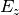 data.
The odd index (1,3,5,…) is z position. [mm]
The even index (2,4,6,…) is Electric field strength. [V/m]
|
RefNorm
|
float
|
Reference normalization factor for complex synchronous phase definition.
This value is defined by 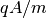 where
 is the scaling factor of the 3D EM field. is the scaling factor of the 3D EM field.If RefNorm or SyncFit are not defined, sinusoidal model is used for the synchronous phase definition.
|
SyncFit
|
vector[5*n]
|
Fitting parameters for complex synchronous phase definition.
The fitting model is shown here.
|
EnergyLimit
|
vector[2]
|
Lower and higher limit for incident energy. [MeV]
This value is used for warning signs only.
|
NormLimit
|
vector[2]
|
Lower and higher limit for normalization factor.
This value is used for warning signs only.
|
Lattice element for the rf cavity data¶
Drift space is the same format as the main lattice but unit of L is [mm] - drift
-
type
EDipole¶ Dipole term generated by the electric field.
Parameters: L: float
Length of the lattice element. [mm]This parameter should be 0.0 in Thin-Lens-Model.V0: float
Amplitude of the multipole term. [MV]attr: vector[20]
-
type
EFocus¶ Constant focusing term generated by the electric field.
Parameters are the same as
EDipole.
-
type
HMono¶ Dipole term generated by the magnetic field.
Parameters: L: float
Length of the lattice element. [mm]This parameter should be 0.0 in Thin-Lens-Model.V0: float
Amplitude of the multipole term. [MA]attr: vector[20]
-
type
HFocus¶ Constant focusing term generated by the magnetic field.
Parameters are the same as
HMono.
-
type
AccGap¶ Acceleration gap term by the longitudinal electric field.
Parameters: L: float
Length of the lattice element. [mm]This parameter should be 0.0 in Thin-Lens-Model.V0: float
Amplitude of the multipole term. [MV]attr: vector[23]
TTF fitting parameter. (see here)1 to 10 - fitting parameter for 11 to 20 - fitting parameter for
11 to 20 - fitting parameter for 21 to 23 - fitting parameter for the synchronous phase
21 to 23 - fitting parameter for the synchronous phase
Note
FLAME is using TTF-calculation acceleration technique to boost cavity modeling speed.
TTF factor and are pre-calculated and fitted using 9th order polynomial function according
to different particle phase speed  .
.  -th fitting parameter 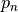 is listed as,
-th fitting parameter 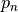 is listed as,
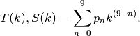
The driven-phase calculation is also boosted by using fitting model for the energy gain curve.
For the sinusoidal fitting model, the phase transferring factor 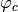 is fitted by using
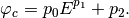
Here,  is the kinetic energy and 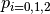 are the fitting parameters.
is the kinetic energy and 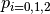 are the fitting parameters.
For other complex models (e.g. peak-base model), the phase transferring factor depends on the normalization factor  where is the scaling factor of the 3D EM field. The fitting model for is,
where is the scaling factor of the 3D EM field. The fitting model for is,
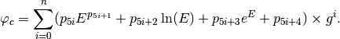
Here, user can determine value corresponds to the size of SyncFit.
The driven phase 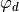 is calculated by using ,
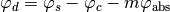
where, 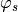 is the synchronous phase in input, 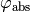
is absolute phase in front of the rf cavity, and  is the harmonic number.
is the harmonic number.